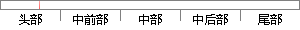

中止模式 ABT 当数据或指令预取中止时进入该模式，用于虚拟存储和存储保护 10111
片段位置图

相似结果
相似片段：操作系统使用的保护模式 中止模式 (abt):数据或指令预取中止时进入该模式,可用于虚拟存 储及存储保护 系统模式(sys):运行具有特权的操作系统任务 未定义模式 (...
| 标题 | 《小卫星星务管理硬件平台软件仿真的研究》 |
| 对比库 | 中国学位论文全文数据库 |
| 作者 | 张利兵 |
| 机构 | 哈尔滨工业大学 |
| 分类 | 计算机科学与技术 |
| 年份 | 2005 |
| 相似率 | 85.29% （严重抄袭） |
※ 片段修改建议 ※
近似词参考：- 中止：中断
- 虚拟：假造
系统自动生成语句：中断模式 ABT 当数据或指令预取中断时进入该模式，用于假造存储和存储保护 10111
注：本片段修改建议为系统自动生成，仅供参考。